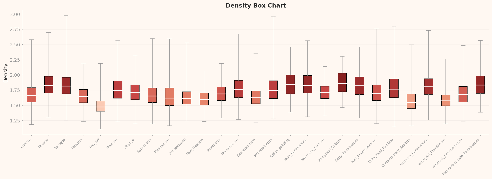

평가 방법론
이 보고서는 DataClinic의 3단계 진단 결과(Level I / II / III)를 ISO/IEC 5259-2:2024 품질측정기준(QM) 프레임으로 재해석한 독립 평가입니다. DataClinic이 측정한 수치, 차트, 이상치를 각 ISO QM 항목의 정의에 따라 매핑하고, Pass / Fail / 주의를 독자적으로 판정했습니다. 특히 DataClinic API 설명과 실제 차트 데이터 사이의 불일치를 비판적으로 재해석합니다.
요약: WikiArt 미술 사조 이미지 데이터셋(81,444장, 27개 클래스)을 ISO/IEC 5259-2:2024 품질측정기준(QM)으로 독립 평가했습니다. DataClinic의 3단계 진단 수치와 차트를 ISO QM 항목에 매핑한 결과, 13개 평가 항목 중 Fail 5개, 주의 5개, N/A 3개로 나타났으며, Pass 항목은 0개입니다. Impressionism 대 Analytical Cubism의 133배 불균형, L2 단일 구름 구조, L3 블랑샤르 효과(단일 화가가 "전형적 예술"을 정의), Pop Art의 매체 단층선이 핵심 문제입니다. DataClinic 점수 53/100(나쁨)은 ISO 관점에서도 재확인됩니다.
1 데이터셋 개요
기본 정보
| 데이터셋명 | WikiArt |
| 출처 | HuggingFace (huggan/wikiart) |
| 전체 이미지 수 | 81,471장 (진단: 81,444장) |
| 클래스 수 | 27개 (미술 사조) |
| 이미지 크기 | 750×597 ~ 1382×17768 px |
| DataClinic 점수 | 53 / 100 (나쁨) |
클래스 분포 상위 10개 (L1 진단)
| 클래스 (사조) | 샘플 수 |
|---|---|
| Impressionism | 13,060 |
| Realism | 10,733 |
| Romanticism | 7,019 |
| Expressionism | 6,736 |
| Post_Impressionism | 6,450 |
| Art_Nouveau | 4,334 |
| Baroque | 4,241 |
| Symbolism | 3,421 |
| Abstract_Expressionism | 2,782 |
| Naive_Art | 2,405 |
| ... (17개 사조 생략) | |
| Analytical_Cubism | 98 |
최대 · 최소 클래스 비율: 133 : 1 (Impressionism vs Analytical_Cubism)

▲ WikiArt 데이터셋 대표 이미지 콜라주 — 르네상스부터 팝 아트까지 27개 미술 사조
WikiArt는 미술 사조(Art Movement) 분류를 위한 대규모 이미지 데이터셋으로, HuggingFace에서 가장 널리 사용되는 미술 AI 벤치마크 중 하나입니다. 르네상스부터 현대 미술까지 27개 사조, 81,000여 점의 작품을 포함합니다. 그러나 미술사의 고유한 시대별 작품 수 차이, 디지털화 편향, 서양 중심 큐레이션이 ML 학습용 데이터로서의 품질에 영향을 미칩니다. DataClinic 종합 점수 53점(나쁨)은 이러한 구조적 문제를 반영합니다.
2 ISO/IEC 5259-2 평가 프레임워크
본 보고서는 ISO/IEC 5259-2:2024의 품질측정기준(QM, Quality Measure)을 WikiArt 이미지 데이터셋에 독립적으로 적용한 평가입니다. DataClinic의 3단계 진단 결과를 ISO QM 항목의 정의에 따라 매핑하고, 각 항목별로 독자적으로 해석 및 판정합니다. 특히 이 보고서에서는 DataClinic API의 텍스트 설명과 실제 차트 데이터 사이의 4가지 불일치를 비판적으로 지적합니다.
| DataClinic 진단 단계 | 측정 내용 | 매핑되는 ISO 5259-2 QM |
|---|---|---|
| Level I | 클래스 수 · 샘플 수, 결측치, 픽셀 통계(RGB), 해상도 범위 | Com-ML, Bal-ML-1, Eft-ML-1 |
| Level II | Wolfram ImageIdentify Net V2 임베딩(1280차원) — 범용 형태 인식 | Sim-ML, Rep-ML-1, Div-ML-1, Con-ML-2 |
| Level III | BLIP 이미지-텍스트 매칭(56차원) — 의미 기반 분석 | Rep-ML-3, Div-ML-2, Acc-ML-7 |
내재적 DQC
완전성 · 일관성
→ DataClinic Level I
AI/ML 추가 DQC
균형 · 유사 · 대표 · 다양 · 유효 · 정확
→ DataClinic Level II/III
판정 기준
✗ Fail 기준 미달
⚠ 주의 추가 검토 필요
— N/A 평가 유보
3 내재적 품질 특성 평가
| QM ID | 항목 | ISO 정의 | 판정 |
|---|---|---|---|
| Com-ML-1 | 클래스 완전성 | 목표 도메인의 클래스 목록이 충분히 포함되었는가 | ⚠ 주의 |
| Con-ML-2 | 픽셀 채널 일관성 | RGB 채널 분포의 통계적 일관성 | ⚠ 주의 |
Com-ML-1 — 클래스 완전성: 주의
WikiArt는 27개 미술 사조를 포함하고 있어 서양 미술사의 주요 흐름을 폭넓게 다루고 있습니다. 그러나 일부 희귀 사조의 샘플 수가 ML 학습에 부적합한 수준입니다. Action Painting(98장), Analytical Cubism(98장), Synthetic Cubism(120장)은 딥러닝 모델의 최소 학습 요건(통상 300장 이상)에 크게 못 미칩니다. 27개 사조가 모두 "존재"하지만, 일부는 실질적으로 학습 불가능한 수준이므로 완전한 Pass를 줄 수 없습니다.
Con-ML-2 — 픽셀 채널 일관성: 주의
L1 픽셀 히스토그램(아래)에서 RGB 채널 간 분포가 극적으로 다른 양상을 보입니다. Blue 채널은 30-40 구간에서 뚜렷한 좌편향 정점을 나타내고, Red 채널은 이중봉 구조에 255 부근 스파이크가 존재하며, Green은 비교적 완만한 중간 분포를 보입니다.
이러한 분포는 미술사적으로 설명 가능합니다. Blue 저값은 전통 회화의 갈색 그라운드(유화 바탕)에서 기인하고, Red 255 스파이크는 카드뮴 레드, 주사(朱砂) 등 고채도 안료의 순색이 디지털 이미지에서 포화되는 현상입니다. 예술적으로 유의미하지만, ML 파이프라인에서 채널 정규화 전략이 필요함을 의미합니다.

▲ L1 픽셀 히스토그램 — Blue(좌편향 30-40), Red(이중봉 + 255 스파이크), Green(중간 완만). 채널별 극적 차이 확인
🔍 비판적 재해석 D1: RGB "일관성" 주장 반박
DataClinic API 설명: "RGB 채널 일관적"
실제 차트 데이터: 위 L1 픽셀 히스토그램에서 Blue(30-40 좌편향), Red(이중봉 + 255 스파이크), Green(중간 완만)으로 채널 간 분포가 극적으로 다릅니다.
세 채널이 유사한 형태를 가져야 "일관적"이라 할 수 있으나, 실제로는 각 채널이 서로 다른 통계적 특성을 나타냅니다.
이 불일치는 회화 재료학적으로 설명 가능하지만, API의 "일관적"이라는 판정은 부정확합니다.
4 균형성 평가 — Bal-ML
| QM ID | 항목 | 측정값 | 판정 |
|---|---|---|---|
| Bal-ML-1 | 클래스 균형 | 133배 불균형, stdDev(3,269) > mean(3,016) | ✗ Fail |
| Bal-ML-2 | 특징 공간 균형 | L3 시대별 층화(고전 1.84-1.87, 현대 1.49-1.67) | — N/A |
Bal-ML-1 — 133배 클래스 불균형
ISO 5259-2의 Bal-ML-1은 클래스별 샘플 수의 균형 정도를 측정합니다. 통상 최대/최소 비율이 10:1을 초과하면 심각한 불균형으로 간주됩니다. WikiArt의 Impressionism(13,060장) 대 Analytical Cubism(98장) 비율은 133:1로, 이는 재활용 데이터셋 SpectralWaste의 19.6:1보다 약 7배 더 심각한 수준입니다.
더 구조적인 문제는 표준편차(3,269)가 평균(3,016)을 초과한다는 점입니다. 이는 "평균적인 클래스"라는 개념 자체가 무의미함을 뜻합니다. 데이터셋이 소수의 대형 사조(인상주의, 사실주의, 낭만주의)와 다수의 소형 사조(큐비즘 계열, 미니멀리즘)로 이분되어 있습니다.
이 불균형은 미술사적으로 필연적입니다. 인상주의는 19세기 후반 수십 년간 유럽 전역에서 수천 명의 화가가 참여한 대중적 운동이었고, 분석적 큐비즘은 1907-1912년 피카소와 브라크 두 명이 주도한 단기 실험이었습니다. 그러나 미술사적 필연이 ML 학습 문제를 면제하지 않습니다. 모델은 Analytical Cubism을 거의 학습하지 못한 채 Impressionism에 과적합될 것입니다.
Bal-ML-2 — 특징 공간 균형: N/A (평가 유보)
L3 Box Chart에서 고전 사조(Baroque, Renaissance 등) 중앙값 1.84-1.87과 현대 사조(Pop Art, Minimalism 등) 중앙값 1.49-1.67 사이의 층화가 관찰됩니다. 이 분리는 시대에 따른 예술적 특성 차이를 반영하는 것으로, 미술사적 사실에 기반합니다. "불균형"으로 볼 수 있지만 역사적 현실의 반영이므로 판정을 유보합니다.
5 식별가능성 · 라벨 정확도 평가
| QM ID | 항목 | 측정값 | 판정 |
|---|---|---|---|
| Eft-ML-1 | 식별가능성 | L2 클래스 분리 불가 (단일 구름) | ⚠ 주의 |
| Eft-ML-2 | 어노테이션 완전성 | 메타데이터(작가, 연도) 완전성 미진단 | — N/A |
| Acc-ML-7 | 라벨 정확도 | Dali → Abstract_Expressionism 오분류, Pop Art 매체 혼입 | ✗ Fail |
Eft-ML-1 — L2에서 클래스 분리 불가
ISO 5259-2의 Eft-ML은 데이터셋의 각 클래스가 학습을 통해 구분 가능한지를 평가합니다. L2 범용 렌즈(Wolfram ImageIdentify Net V2, 1280차원) PCA와 등고선에서 27개 클래스가 하나의 연결된 구름을 형성합니다. 클래스 간 경계가 전혀 보이지 않으며, 이는 범용 형태 인식 AI가 미술 사조를 시각적으로 구분하지 못한다는 것을 의미합니다.
DataClinic은 L2 Geometry 등급을 "좋음(Good)"으로 평가했지만, 이는 차트 데이터와 일치하지 않습니다(아래 불일치 D3 참조).
🔍 비판적 재해석 D3: Geometry "좋음" 과대평가
DataClinic API: L2 Geometry = "좋음(Good)"
실제 차트: L2 PCA + 등고선 모두에서 27개 클래스가 단일 구름. 클래스 분리가 전혀 이루어지지 않은 상태를 "좋음"으로 평가하는 것은 과대평가입니다.
클래스가 분리되지 않는 데이터셋에서 지도학습 분류기의 성능은 심각하게 저하됩니다.
ISO Eft-ML-1 관점에서 "나쁨" 수준에 해당합니다.
Acc-ML-7 — 라벨 정확도 실패
두 가지 유형의 라벨링 오류가 관찰됩니다.
1. 체계적 사조 오분류: Salvador Dali의 작품이 Abstract Expressionism으로 라벨링되어 있습니다. Dali는 미술사에서 명확하게 Surrealism으로 분류되며, Abstract Expressionism과는 시대, 지역, 기법 모두에서 구분됩니다. 이러한 오류가 개별 사례를 넘어 체계적으로 존재할 가능성을 시사합니다.
2. 매체 혼입: Pop Art 클래스에 전통 회화뿐 아니라 설치미술 사진, 건축 사진 등 회화가 아닌 이미지가 혼입되어 있습니다. "예술 = 회화"라는 암묵적 가정이 Pop Art 장르에서 무너지며, 이는 L3 분석에서 Pop Art의 극단적 분리로 이어집니다.
6 유사성 평가 — Sim-ML
| QM ID | 항목 | 측정값 | 판정 |
|---|---|---|---|
| Sim-ML-1 | 클래스 내 유사성 | 일부 클래스(Cubism 계열) 응집력 높으나 전체 정량 측정 불가 | — N/A |
| Sim-ML-2 | 교차 클래스 유사성 | Minimalism ≈ Color_Field_Painting (L2 동일 군집) | ⚠ 주의 |
Sim-ML-2 — Minimalism과 Color Field Painting의 융합
Sim-ML-2는 서로 다른 클래스의 샘플들이 임베딩 공간에서 지나치게 가까운 경우를 측정합니다. L2 분석에서 Minimalism과 Color Field Painting이 거의 동일한 위치에 군집합니다. 이 두 사조는 미술사에서도 밀접하게 연결되어 있으며(1960년대 뉴욕, 색면과 기하학적 단순성을 공유), 범용 형태 인식 AI가 양자를 구분하지 못하는 것은 어느 정도 예측 가능합니다.
그러나 ML 관점에서 이 두 클래스를 별도 클래스로 유지하면 분류기가 경계를 학습하지 못합니다. 클래스 병합 또는 계층적 라벨링(Minimalism → "기하학적 추상" 상위 카테고리)을 검토해야 합니다.

▲ L2 등고선 — 하나의 연속 질량 내 2개 밀도 중심. 27개 클래스가 분리되지 않고 단일 구름을 형성
🔍 비판적 재해석 D2: 클러스터 수 과장
DataClinic API: "3개 고밀도 클러스터"
실제 차트: L2 등고선에서 하나의 연결된 질량 내 2개 밀도 중심이 관찰됩니다. 이것을 "3개 분리 클러스터"로 기술하는 것은 과장입니다.
분리된 클러스터와 하나의 질량 내 밀도 변화는 ML에서 완전히 다른 의미를 가집니다.

▲ L2 PCA — 27개 클래스가 하나의 구름으로 겹침. 클래스 분리 불가

▲ L2 밀도 히스토그램 — 전체 밀도 분포 확인
7 대표성 평가 — Rep-ML
| QM ID | 항목 | ISO 정의 | 판정 |
|---|---|---|---|
| Rep-ML-1 | L2 대표성 | 특징 공간 핵심부가 전체 도메인을 대표하는가 | ✗ Fail |
| Rep-ML-3 | L3 대표성 | 의미 공간에서 "전형적" 샘플이 도메인을 대표하는가 | ✗ Fail |
Rep-ML-1 — L2 특징 공간: Minimalism/Color Field 편향
L2 범용 렌즈의 특징 공간 핵심부(고밀도 영역)를 Minimalism과 Color Field Painting이 지배합니다. 이 두 사조는 시각적으로 단순한 구성(단색 화면, 기하학적 형태)을 특징으로 하며, 범용 형태 인식 AI에서 "가장 보편적인 시각 패턴"으로 해석됩니다.
그 결과, 27개 사조의 풍부한 시각적 다양성(Baroque의 극적 명암, Ukiyo-e의 판화 질감, Expressionism의 왜곡된 형태)이 특징 공간에서 적절히 대표되지 못합니다. 이는 범용 렌즈의 한계이자, 동시에 데이터셋의 대표성 부족을 보여줍니다.

▲ L2 Box Chart — 클래스별 밀도 분포. Minimalism/Color_Field_Painting의 고밀도 편중 확인
🎨 앙투안 블랑샤르 효과 (Antoine Blanchard Effect)
Rep-ML-3 Fail의 핵심 근거: L3(BLIP 이미지-텍스트 매칭) 고밀도 상위 12개 샘플 중 7개가 Antoine Blanchard의 파리 가로수길 풍경화이고, 나머지 4개도 Pissarro 등 인상파 도시풍경입니다.
Blanchard는 19세기 상업 화가로, 파리의 상젤리제, 마들렌 광장, 오페라 가르니에 앞 거리를 반복적으로 그렸습니다. 그의 작품이 WikiArt에 다수 포함됨으로써, BLIP 렌즈의 "전형적 예술(typical art)" 정의가 "비 오는 파리 저녁, 가로등 아래 거리 풍경"으로 수렴합니다.
이것은 데이터 수집 편향(특정 화가의 반복 작품 과다 수집)과 렌즈 특성(BLIP의 의미 매칭이 구상적 도시 풍경에 높은 일관성 점수를 부여)이 교차하는 지점입니다. 단일 화가의 상업적 반복 작품이 81,000장 데이터셋의 "핵심"을 정의하고 있다면, 그 데이터셋은 미술의 다양성을 대표한다고 볼 수 없습니다.

▲ L3 PCA — BLIP 의미 공간. Pop Art 극적 분리 + 시대별 층화 관찰

▲ L3 밀도 히스토그램 — BLIP 렌즈 기준 밀도 분포
8 다양성 평가 — Div-ML
| QM ID | 항목 | 판정 |
|---|---|---|
| Div-ML-1 | L2 다양성 — 27개 클래스가 L2에서 단일 연속 구름 | ✗ Fail |
| Div-ML-2 | L3 다양성 — Pop Art 극적 분리, 시대별 층화 존재 | ⚠ 주의 |
Div-ML-1 — L2에서 다양성 실패
ISO 5259-2의 Div-ML-1은 데이터셋의 실효 차원수와 특징 분포의 다양성을 측정합니다. L2 범용 렌즈에서 27개 미술 사조가 하나의 연속 구름으로 뭉쳐 있다는 것은, 이 렌즈 관점에서 "미술 사조 다양성"이 존재하지 않는다는 뜻입니다.
Wolfram ImageIdentify Net은 일상 객체 분류를 위해 학습된 범용 모델입니다. 이 모델에게 모든 회화는 "이미지"라는 단일 카테고리에 가깝습니다. 사조 간 차이(붓터치, 색감, 구도)는 이 렌즈의 1280차원 공간에서 미세한 차이로만 나타나, 클래스 분리가 이루어지지 않습니다.

▲ L3 등고선 — BLIP 렌즈에서는 L2와 달리 구조가 드러남. Pop Art 극적 분리 + 시대별 층화
🔍 비판적 재해석 D4: L3 클러스터 "불명확" 과소평가
DataClinic API: "클러스터 구분 여전히 불명확"
실제 차트: L3 Box Chart(아래)에서 Pop Art의 극적 분리(중앙값 ~1.50 vs 나머지 1.70-1.90)와
고전/현대 사조의 시대별 층화가 명확하게 관찰됩니다.
"불명확"이라는 평가는 L3 차트의 실제 구조를 과소평가합니다.
⚡ Pop Art의 단층선
L3 Box Chart에서 Pop Art 중앙값은 약 1.50으로, 나머지 26개 사조의 중앙값(1.70~1.90)과 극적으로 분리됩니다. 이 분리의 원인은 매체(medium)의 근본적 차이입니다.
Pop Art 클래스의 저밀도 샘플(이상치)을 확인하면, 전통 회화가 아닌 설치미술 사진, 건축 사진, 콜라주가 포함되어 있습니다. BLIP 렌즈는 이미지와 텍스트의 의미 매칭을 수행하므로, "캔버스 위 유화"와 "갤러리 안 설치물 사진"을 완전히 다른 유형으로 인식합니다.
"예술 = 회화"라는 WikiArt의 암묵적 가정이 Pop Art에서 무너집니다. Pop Art는 회화를 넘어 판화, 실크스크린, 설치, 콜라주를 포괄하는 사조이며, 이 매체적 다양성이 L3에서 "단층선"으로 나타난 것입니다. 이는 사조 다양성이 아닌 매체 다양성 문제입니다.

▲ L3 Box Chart — 핵심 차트. Pop Art 극적 분리(중앙값 ~1.50) + 고전 사조(Baroque, Renaissance: 1.84-1.87) vs 현대 사조(Minimalism, Color_Field: 1.49-1.67) 시대별 층화
9 두 렌즈의 대조: L2 vs L3
WikiArt의 가장 흥미로운 발견은 두 렌즈가 완전히 다른 이야기를 들려준다는 것입니다. L2(범용 형태 인식)는 "모든 회화는 비슷하다"고 말하고, L3(의미 매칭)는 "시대와 매체에 따라 명확히 구분된다"고 말합니다. 아래 비교 카드는 두 관점을 병렬로 보여줍니다.
| 구분 | L2 핵심 (범용 형태 AI) | L3 핵심 (의미 매칭 AI) |
|---|---|---|
| 고밀도 핵심 | Minimalism / Color_Field_Painting 시각적 단순성이 "보편적 패턴"으로 해석됨 |
Antoine Blanchard 파리 가로수길 의미적 일관성이 높은 구상 도시풍경 |
| 저밀도 이상치 | Degas 초상화, Ukiyo-e 판화, Mabe 추상 범용 렌즈에서 "특이한" 시각 패턴 |
Pop Art 설치사진, 현대 건축 회화가 아닌 매체 → 의미 공간에서 이탈 |
| 클러스터 구조 | 하나의 구름 (클래스 분리 불가) 모든 회화가 "이미지" 하나로 수렴 |
Pop Art 극적 분리 + 시대별 층화 의미 기반으로 시대 · 매체 구분 가능 |
| ISO 시사점 | Div-ML-1 Fail, Eft-ML-1 주의 범용 렌즈로는 미술 사조 분류 불가 |
Rep-ML-3 Fail, Div-ML-2 주의 의미 렌즈는 구조를 발견하나 대표성 편향 |
핵심 교훈: 렌즈 선택이 데이터 품질 평가 결과를 근본적으로 좌우합니다. L2 범용 렌즈만으로 "미술 사조 분류 불가"라고 결론지으면 L3가 발견한 시대별 구조를 놓치고, L3만 보면 범용 AI 서비스에서의 실패 가능성을 무시하게 됩니다. ISO 5259-2 평가에서 다중 렌즈 분석의 필요성을 다시 한번 확인합니다.
10 종합 평가 및 개선 처방
| DQC 그룹 | QM ID | 항목 | 판정 | 심각도 |
|---|---|---|---|---|
| 균형성 | Bal-ML-1 | 클래스 균형 (133배) | ✗ Fail | 심각 |
| 대표성 | Rep-ML-1 | L2 Minimalism 편향 | ✗ Fail | 심각 |
| 대표성 | Rep-ML-3 | L3 블랑샤르 효과 | ✗ Fail | 높음 |
| 다양성 | Div-ML-1 | L2 단일 구름 | ✗ Fail | 심각 |
| 정확성 | Acc-ML-7 | Dali 오분류, Pop Art 매체 혼입 | ✗ Fail | 높음 |
| 완전성 | Com-ML-1 | 희귀 사조 98~120장 | ⚠ 주의 | 중 |
| 식별가능성 | Eft-ML-1 | L2 클래스 분리 불가 | ⚠ 주의 | 중 |
| 유사성 | Sim-ML-2 | Minimalism ≈ Color_Field | ⚠ 주의 | 중 |
| 다양성 | Div-ML-2 | Pop Art 매체 단층선 | ⚠ 주의 | 중 |
| 일관성 | Con-ML-2 | RGB 채널 불일치 | ⚠ 주의 | 중 |
| 유사성 | Sim-ML-1 | 클래스 내 정량 측정 불가 | — N/A | — |
| 식별가능성 | Eft-ML-2 | 메타데이터 완전성 미진단 | — N/A | — |
| 균형성 | Bal-ML-2 | 시대별 층화(역사적 사실) | — N/A | — |
즉각 조치
- Bal-ML-1: 희귀 사조(Analytical_Cubism, Action_Painting 등) 300장 이상 보강
- Acc-ML-7: 사조 라벨 전수 검수. Dali → Surrealism 등 체계적 오류 교정
- Div-ML-1: 클래스 체계 재설계 — 27개 사조 병합/계층화 검토
중기 개선
- Rep-ML-1/3: Blanchard 등 상업적 반복 작품 비율 조정 (다운샘플링 or 가중치)
- Div-ML-2: Pop Art 클래스를 "회화"와 "비회화(설치/사진)" 서브클래스로 분리
- Sim-ML-2: Minimalism & Color_Field_Painting 병합 또는 계층적 라벨링
모니터링
- Con-ML-2: RGB 채널 정규화 전략 수립 (회화 도메인 특화)
- Eft-ML-1: 도메인 특화 렌즈 기반 분류 파이프라인 검토
- Com-ML-1: 비서양 미술 사조(동양화, 이슬람 세밀화 등) 확장 검토
DataClinic 53점의 의미
DataClinic 종합 점수 53/100(나쁨)은 이 보고서의 ISO 5259-2 독립 평가와 정합합니다. Fail 5개 + 주의 5개, Pass 0개라는 결과는 WikiArt가 "미술 사조 분류"라는 목적에 대해 심각한 구조적 품질 문제를 안고 있음을 확인합니다. 그러나 이 데이터셋은 동시에 8만 장 규모의 풍부한 미술 자원이기도 합니다. 위 처방을 단계적으로 적용하면 ML 벤치마크로서의 가치를 회복할 수 있습니다.
비판적 재해석 요약: DataClinic API vs 실제 차트
| # | DataClinic API 주장 | 실제 차트 데이터 | ISO 판정 영향 |
|---|---|---|---|
| D1 | "RGB 채널 일관적" | Blue 좌편향, Red 이중봉+255 스파이크 | Con-ML-2 주의로 상향 |
| D2 | "3개 고밀도 클러스터" | 1개 연결 질량 내 2개 밀도 중심 | Div-ML-1 Fail 유지 |
| D3 | L2 Geometry "좋음" | 27개 클래스 단일 구름, 분리 불가 | Eft-ML-1 주의 |
| D4 | L3 클러스터 "불명확" | Pop Art 극적 분리 + 시대별 층화 명확 | Div-ML-2 주의 (과소평가 교정) |
참고 자료
- [1] ISO/IEC JTC 1/SC 42. (2024). ISO/IEC 5259-2:2024 — Part 2: Data quality measures.
- [2] DataClinic Report #115 — WikiArt. dataclinic.ai/en/report/115
- [3] WikiArt Dataset (huggan/wikiart). HuggingFace
- [4] Pebblous. (2025). AI 데이터 품질 표준과 페블러스 데이터클리닉: ISO/IEC 5259-2 정량적 매핑
- [5] Pebblous. (2026). SpectralWaste ISO/IEC 5259-2 독립 평가 보고서